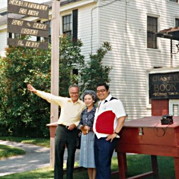

会社案内
株式会社タトル・モリ エイジェンシーは、日本の翻訳出版界のマーケットシェア60％を占める国内最大手の海外著作権エージェントです。
チャールズ・イー・タトル商会（創業1948年）の著作権部として1952年にライセンス業務を始め、1978年にタトル・モリ エイジェンシーとして分離独立した弊社が
契約仲介した作品はすでに８万点を超えました。
海外作品の翻訳著作権の仲介業務に加えて海外のテレビ番組配給業務や日本作品の海外へのライセンス業務など新分野でのビジネスも精力的に手がけてきました
。 1992年に開始したマンガ作品の海外へのライセンス業務もいまや世界３１ヶ国（１９言語）以上との取引を行うまでになっております。
今後も創業時からの理念である“Agency To Span The East and
West”をモットーに優れた作品の発掘に力を注ぎ、東西文化の掛け橋の一助となるよう、一層の努力を続けます。
弊社が仲介した作家の例：
- フレデリック・フォーサイス
- ジョン・グリシャム
- パトリシア・コーンウェル
- アレクサンドル・ソルジェニーツィン
- レイチェル・カーソン
- ピーター・ドラッカー
- ダン・ブラウン
- ソール・ベロー
- ガブリエル・ガルシア＝マルケス
- ノーマン・メイラー
- ビアトリクス・ポター
- トーヴェ・ヤンソン
- ロアルド・ダール
- エリック・ヒル
沿革
| 1948 | チャールズ・イー・タトル商会日本支社を東京都文京区に設立。 |
| 1954 | 社屋を東京都文京区水道に移転。著作権課を設立。 |
| 1962 | チャールズ・イー・タトル商会日本支社を株式会社チャールズ・イー・タトル商会日本法人に改組。 |
| 1969 | ロンドン支局開設。 |
| 1976 | 印税計算をコンピュータ化し、契約のコンピュータ管理を始める。 |
| 1978 | 6月、株式会社タトル・モリ エイジェンシー発足。12月、オフィスを千代田区神田神保町（現在地）へ移転。 |
| 1979 | ニューヨークのS.J. Greenburger Associatesと提携。 |
| 1985 | 映像・マーチャンダイジング部門を統括する姉妹会社T.M.インターナショナル始動。 |
| 1988 | タトル・モリ エイジェンシー発足10周年：タトル商会創業40周年記念パーティーをアメリカンクラブにて催す。 |
| 1989 | 「ムーミン」のマーチャンダイジング業務を開始。 |
| 1990 | 台湾・中国大蘋果股份有限公司に出資。社名をBig Apple Tuttle-Mori Agency, Inc.に改称。 |
| 1992 | マンガのライセンシング業務を開始。タイに現地法人を設立。 |
| 1995 | 韓国のエージェンシー、Eric Yang Agencyと提携。ドイツのエージェンシー、Gutmann + Gutmann GmbHと提携。 |
| 1996 | フランスのエージェンシー、Frédérique Porretta Agence Littéraireと提携。 |
| 1997 | イタリアのエージェンシー、International Publishing Studioと提携。 |
| 2002 | 7月、F. Porretta Agence解散に伴い、M.P. Robertと提携。 |
| 2003 | タトル・モリ エイジェンシー発足25周年：タトル商会創業55周年記念パーティーをグランドパレスにて催す。 |

1980年6月、創業者チャールズとレイコ・タトル夫妻と故森武志、バーモント州ラットランドのタトル書店（１８３２年創業）の前で。